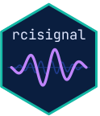

Simulate Brief-RC reverse-correlation data
Source:R/simulate_data.R
simulate_briefrc_data.RdGenerates a synthetic Brief-RC dataset (Schmitz, Rougier, &
Yzerbyt, 2024) where each trial shows several original/inverted
noise pairs and the participant picks one image. Output is
shape-compatible with run_diagnostics(),
ci_from_responses_briefrc(), and the reliability /
discriminability functions.
Noise pool is generated once via rcicr::generateNoisePattern()
and rcicr::generateNoiseImage() and then sampled per trial
(without replacement within a participant; the same pool is
shared across participants).
Usage
simulate_briefrc_data(
n_per_condition = 50L,
conditions = c("target", "control"),
n_trials = 500L,
images_per_trial = 12L,
noise_pool_size = NULL,
img_size = 256L,
base_image = NULL,
signal_strength = "weak",
signal_region = "eyes",
rt_contamination_fast = 0.02,
rt_contamination_slow = 0.02,
noise_type = "sinusoid",
nscales = 5L,
sigma = 25,
seed = NULL,
progress = TRUE
)Arguments
- n_per_condition, conditions, n_trials, img_size, base_image, signal_strength, signal_region, rt_contamination_fast, rt_contamination_slow, noise_type, nscales, sigma, seed, progress
See
simulate_2ifc_data(). Note:n_trialshere means the number of Brief-RC trials per participant, not the noise pool size. Defaultn_trials = 500.- images_per_trial
Integer (even). Number of images shown per trial; half are original and half are inverted versions of the same noise patterns. Default
12(= 6 pairs).- noise_pool_size
Integer. Total number of noise patterns to pre-generate. Default
n_trials * (images_per_trial / 2), i.e. enough so each participant samples without replacement. Pass a larger value to study sub-sampling.
Value
An object of class "rcisignal_sim". See
simulate_2ifc_data() for the structure. The meta list also
carries images_per_trial and noise_pool_size.
Signal model
Per trial, with images_per_trial = 2k, the participant sees k
original/inverted pairs. Each of the 2k images has utility
beta * (noise %*% s) / scale + Gumbel(0, 1), where noise is
+noise[, j] for the original version and -noise[, j] for the
inverted version of pair j. The participant picks the image
with the highest utility (multinomial logit / softmax). The
recorded stimulus is the pool index of the chosen pair;
response is +1 if the original version was chosen and -1
for the inverted version.
RT model
Shifted lognormal: rt = round(exp(rnorm(n, log(800), 0.5)) + 150), in ms. A small fraction of fast (<200 ms) and slow
(>5000 ms) contaminants are mixed in (default 2% each) so the
diagnostic functions (check_rt()) have something to flag.
References
Schmitz, M., Rougier, M., & Yzerbyt, V. (2024). Introducing the brief reverse correlation: an improved tool to assess visual representations. European Journal of Social Psychology. doi:10.1002/ejsp.3100
Examples
if (FALSE) { # \dontrun{
# `sim$data` is a plain data frame (columns: participant_id, stimulus,
# response, condition, rt) — same shape ci_from_responses_briefrc() and
# the check_*() functions expect from your own CSV.
# `sim$noise_matrix` is a numeric matrix `n_pixels x pool_size` — same
# shape read_noise_matrix() returns from your Brief-RC OSF txt file.
sim <- simulate_briefrc_data(n_per_condition = 10, n_trials = 60, seed = 1)
run_diagnostics(sim$data, method = "briefrc",
noise_matrix = sim$noise_matrix, col_rt = "rt")
cis <- ci_from_responses_briefrc(sim$data,
noise_matrix = sim$noise_matrix)
run_reliability(cis$signal_matrix, n_permutations = 200L, seed = 1)
} # }